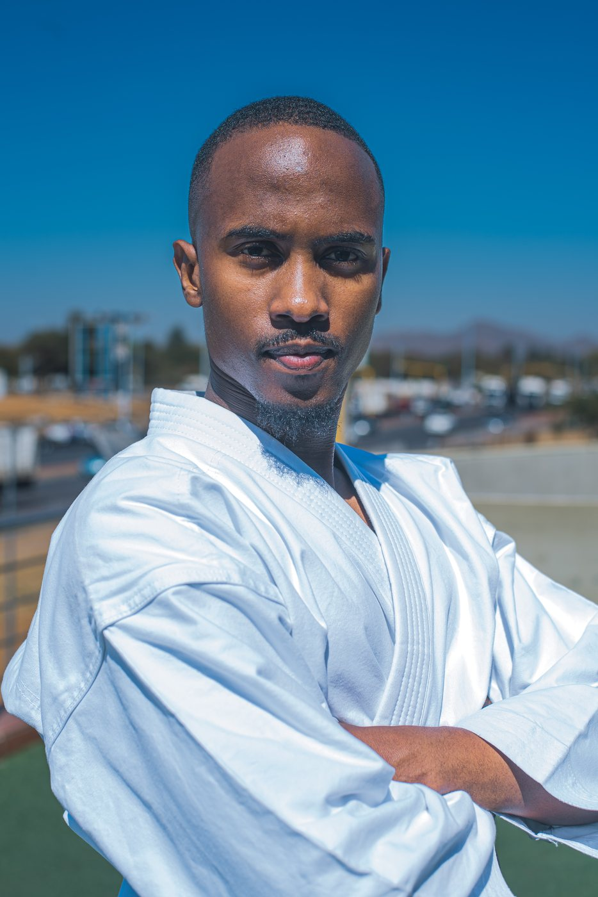
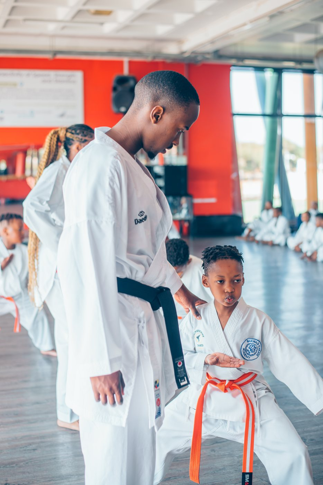
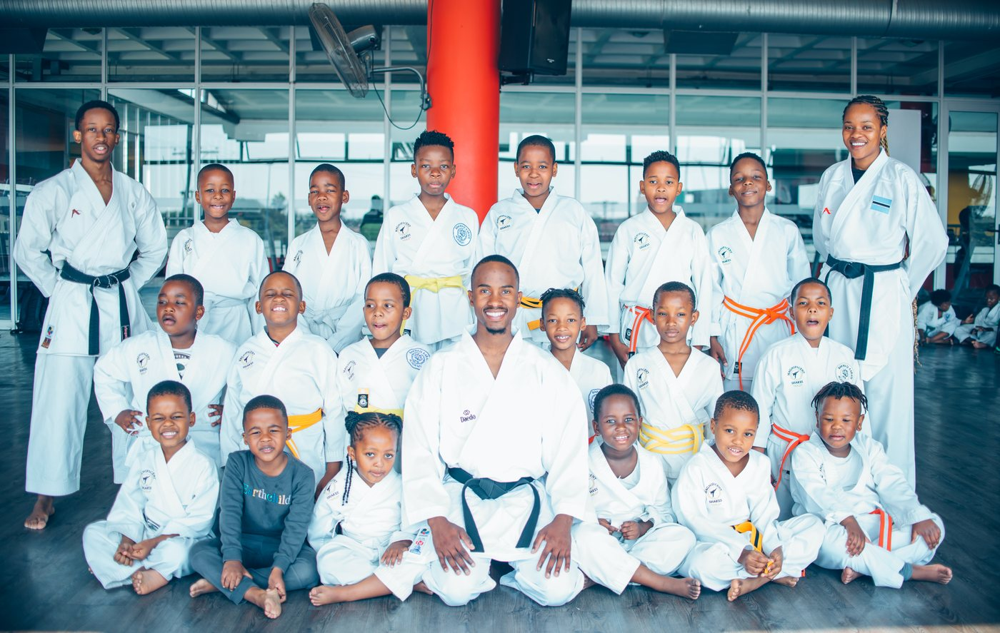
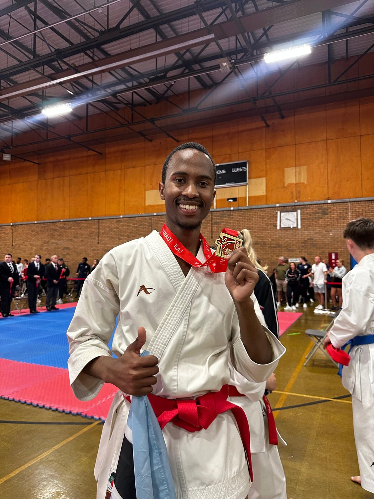
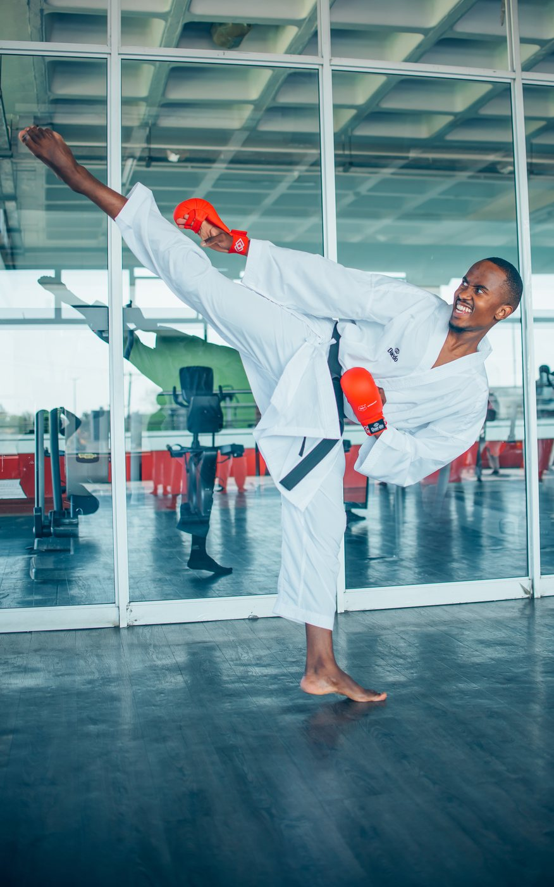
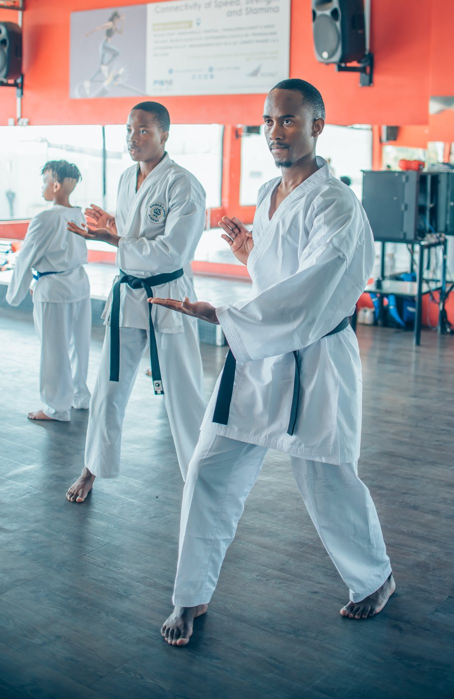
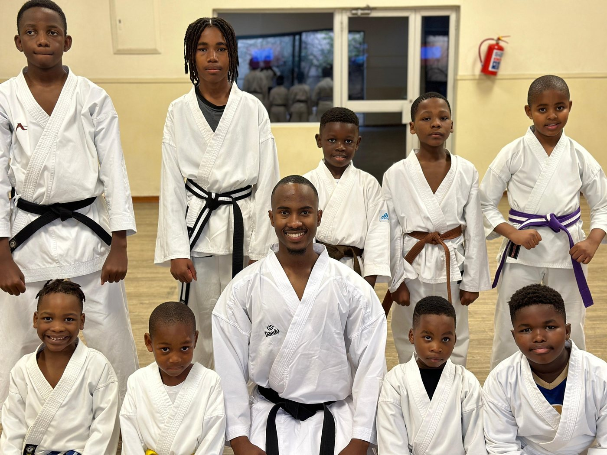
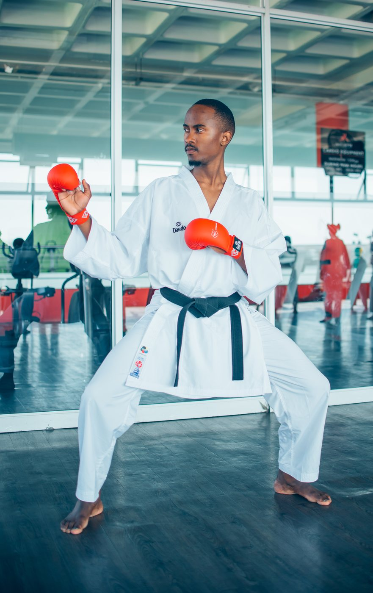
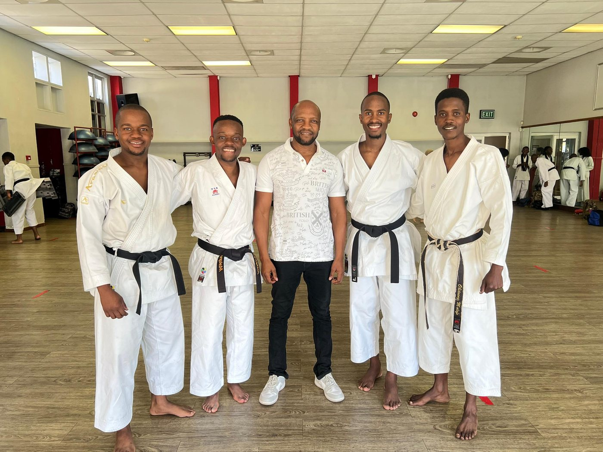

Karate
I have trained in karate for seventeen years, taught it for nine, and it has shaped how I work more than any single module of either degree. It is where I learned to break a complex movement into parts someone else can learn, to prepare for a fixed date I cannot move, and to keep a squad calm when the result is out of my hands.
I hold a 3rd Dan black belt in Japan Karate-Do Hayashi-Ha Shito Ryu Kai and am a senior instructor at Bakwadi Karate Academy in Botswana, now supporting the academy remotely on administration and projects.
- 2009Began training, Botswana Hayashi-Ha Karate Union
- 20141st Dan black belt
- 2017Qualified as an instructor
- 2021Senior instructor
- 20243rd Dan, approved 31 August
Coaching and competition
The part of it that reads most directly onto working life.
The result I am proudest of is not one of my own. I coached a squad of around 30 athletes to the Cape Town Open international tournament, where they came home with 11 gold medals. Getting there meant structured training plans built around each athlete rather than the group, performance analysis between rounds, and managing the gap between what a fighter can do in the dojo and what they can do in front of a crowd.
Teaching at the academy spans ages four to sixty in the same week. A six-year-old and a fifty-year-old learning the same technique need entirely different explanations of it, and finding the one that lands for the person in front of you is a skill that transfers directly to explaining a system to a client who does not share your vocabulary.
Alongside instruction I have invigilated gradings and conducted adherence audits, enforcing sporting codes and safety regulations across the academy. Grading someone fairly when you have trained them yourself is its own discipline.
"He got his 1st Dan Black belt in 2014 and I have gained full confidence in him to lead any training session in my presence or absence. He is always on time for training and tournament preparations making him an asset to our Academy's continued success."
Sensei Ofentse O Bakwadi, Senior Instructor, Botswana Hayashi-Ha
In the dojo
Training, instructing and competing, at the academy in Botswana and abroad.








The grade
My 3rd Dan was approved on 31 August 2024 by Japan Karate-Do Hayashi-Ha Shito Ryu Kai, authorised by the All Japan Karate-Do Foundation, and signed by Mpho Bakwadi, 6th Dan, as certified chief instructor and examiner. I am currently working towards 4th Dan.
Dan grades in this lineage are not awarded on time served. Each one requires demonstrating technique, forms and sparring in front of an examining panel, and the intervals between grades lengthen as you go up, which is why seventeen years of training has produced three of them rather than six.
What it carries into work
Three things, concretely. Preparation against a fixed date, because a tournament does not move and neither does a deadline. Explanation pitched at the listener rather than at myself, learned from teaching the same technique to a child and to an adult in the same hour. And composure when something is not going well, which in sparring you learn quickly or you do not continue.
The discipline is also where the leadership on my CV comes from. Running a squad is budgeting, scheduling, welfare and performance management, carried out by someone in their twenties for people who did not have to listen to them.